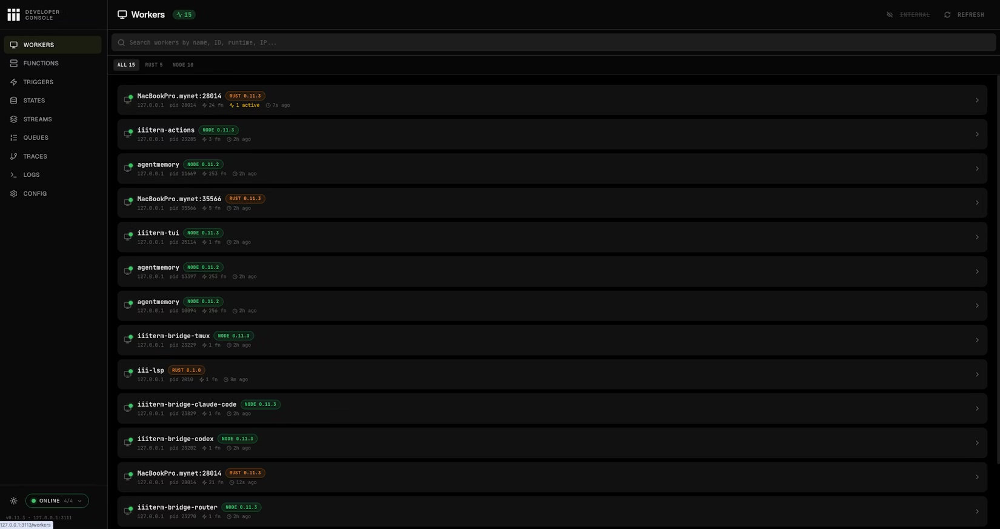
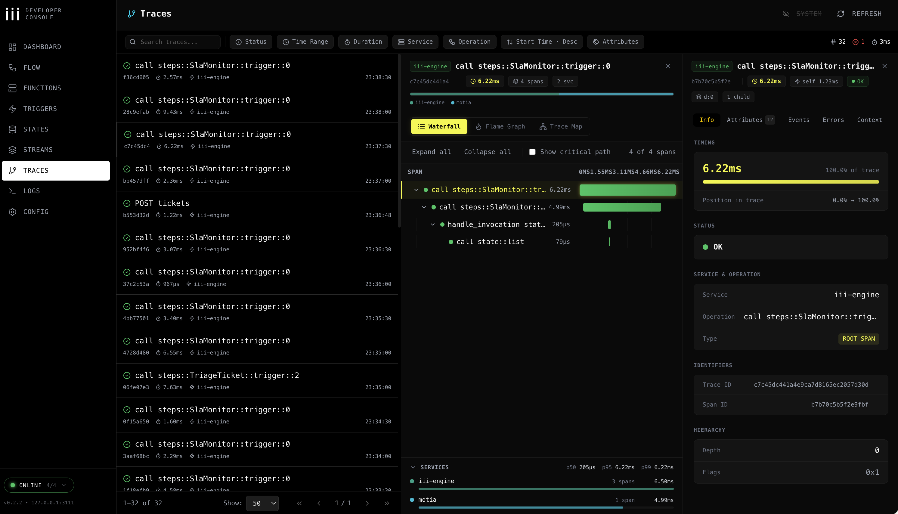
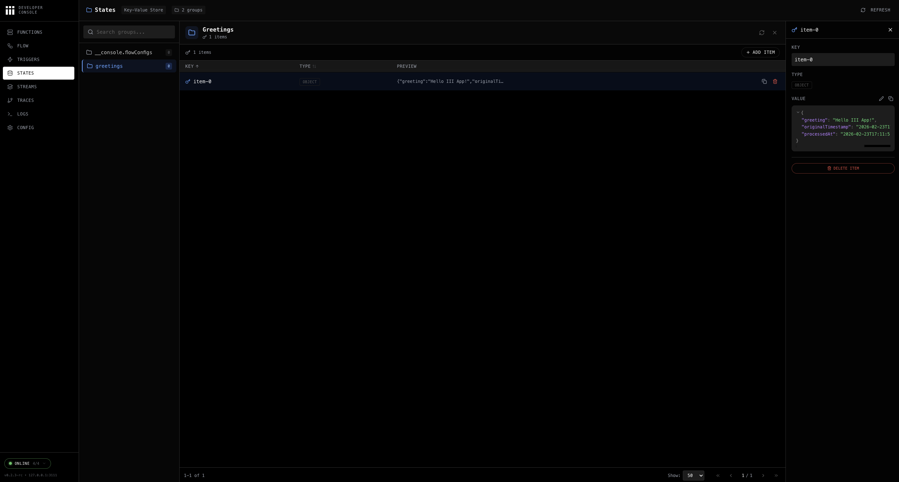

agentmemory: 让 coding agent 记住项目上下文
从自动捕获、混合检索到跨 agent 协作，把“记忆”变成可运营的项目基础设施。
问题不是“记不住”，而是上下文不可运营
项目上下文散落在提示词、聊天、文件和人的脑子里；越到后期，agent 越像一次性进程。
重复解释
架构约束、测试习惯、线上事故、用户偏好反复出现在 prompt 里。
旧决策丢失
“为什么这里这么写”常常需要翻 commit、issue、聊天记录，还不一定找得到。
静态规则过期
AGENTS.md 或 CLAUDE.md 适合硬规则，不适合持续吸收每次会话里的事实。
一句话模型：Capture → Index → Recall → Coordinate
agentmemory 是一个本地记忆服务：自动观察 agent 会话，建索引，在下一次需要时以受控预算返回上下文。
Capture
hooks、REST、MCP 把 prompts、工具调用、提交信息和显式记忆写入同一条链路。
Index
BM25、向量和关系图围绕 observation、memory、lesson 建可检索结构。
Recall
根据问题、文件、会话、commit 或 token budget 返回压缩后的证据。
Coordinate
actions、leases、signals、slots、handoff 支撑多 agent 和跨会话工作流。
8 个 core 默认可见
端口 3111
另有 3 prompts
8 action + 7 reference
iii 心智模型：Worker / Function / Trigger
agentmemory 不绕过 iii-engine；新能力就是注册函数、注册触发器，再通过 sdk.trigger() 组合。
Worker
agentmemory 进程启动后连接 iii-engine，注册所有 mem::*、api::*、mcp::* 函数。
Function
业务能力以函数暴露，例如 mem::observe、mem::smart-search、mem::remember。
Trigger
HTTP、stream、cron、event 把外部请求映射到函数，统一进入 iii 的状态和调用模型。
sdk.registerTrigger({ type: "http", function_id: "api::observe" })
await sdk.trigger({ function_id: "mem::smart-search", payload })
运行时架构：入口很多，状态中心只有一个
hooks、MCP、REST、viewer 和 iii console 看到的是同一套 worker 函数与状态。
自动捕获链路：观察会话，但不拖慢 agent
Claude Code 插件注册 12 个 lifecycle hooks；上下文注入类 hooks 等待结果，遥测类 hooks 默认 fire-and-forget。
两个执行策略
mem::observe 路径级讲解
这一条路径把 hook payload 变成可检索、可回放、可治理的 observation。
registerObserveFunctionDedupMap / privacyKV.observationsSTREAM.viewerGroupbuildSyntheticCompression默认路径的含义
不设置 AGENTMEMORY_AUTO_COMPRESS 时，每条观察仍会生成 zero-LLM 的压缩文本，因此 recall 和 BM25 可以工作。
图像、vision embedding、LLM summary、context injection 都是独立开关，不是基础捕获的前置条件。
检索链路：BM25 + Vector + Graph + RRF
mem::smart-search 是常用入口：多路召回、加权融合、按 session 去集中化，再按 token budget 暴露细节。
BM25
文件名、函数名、错误消息、显式术语命中稳定，默认无需 API key。
Vector
本地默认 embedding 支撑改写、近义、跨表达检索；可持久化并做维度校验。
Graph
可选关系图扩展概念与实体，适合跨 session 的关联发现。
bm25Weight × 1/(60 + bm25Rank)
+ vectorWeight × 1/(60 + vectorRank)
+ graphWeight × 1/(60 + graphRank)
返回不是越多越好
使用面：不是只有一个搜索框
agent 常用 MCP，脚本和外部系统用 REST，操作者用 viewer，知识复用用 skills。
默认只需要记住少数高频动作，完整工具面留给高级治理和协作流程。
memory_recall查过去的决策、文件修改、问题处理方式。memory_save显式保存重要洞察、约定、偏好。memory_smart_search混合检索 + compact/expand 渐进披露。memory_sessions列出近期会话和观察数量，用于 handoff。memory_commit_lookup从 commit SHA 反查产生它的 agent session。memory_verify追踪 memory 或 observation 的来源链。生命周期与治理：让记忆变少、变准、可删除
长期有用的不是“永远保存”，而是捕获、压缩、合并、验证、遗忘的闭环。
整理
consolidate 把工作记忆、episodic、semantic、procedural 分层；lessons 保存可复用经验。
保留
slots 维护小而稳定的项目/全局记忆；retention 和 auto-forget 控制增长。
治理
audit、verify、governance_delete 让状态变更可追踪，可解释，也可删除。
默认边界
基础捕获与 BM25 检索不需要 LLM。LLM compression、graph extraction、context injection、vision embedding 都是配置开关。
协作边界
多 agent 可以通过 AGENT_ID 标记写入，用 AGENTMEMORY_AGENT_SCOPE 控制召回隔离。
截图 demo：不依赖现场 live 操作，也能讲完整
本机 health 已验证 healthy；viewer、MCP 列表和 iii console 截图组成 2 分钟演示路径。
{
"status": "healthy",
"version": "0.9.27",
"viewerPort": 3113,
"viewerSkipped": false,
"connectionState": "connected"
}
memory_recall · memory_save · memory_smart_search · memory_sessions
memory_verify · memory_commit_lookup · memory_lesson_save · ...



证据与边界：只讲 retrieval，不夸大成端到端 QA
benchmark 能证明检索组件，但不能直接证明 agent 一定会做对任务。
| 评测 | 结果 | 含义 |
|---|---|---|
| LongMemEval-S | R@5 95.2% R@10 98.6%, MRR 88.2% | 500 questions，约 48 sessions/question；retrieval-only。 |
| coding-agent-life-v1 | R@5 1.000 15 / 15 top-5 hit | 小型 agent 工作流语料，主要验证 temporal/multi-session recall。 |
| Token savings | ~92% | 与把全部历史塞进上下文相比，top-k recall 只返回所需证据。 |
边界说明
落到我们的工作流：三条实践建议
让记忆成为工程习惯，而不是偶尔想起来才用的搜索框。
开工先 recall
碰到架构、历史决策、跨文件修改、测试习惯时，先查过去会话，不要让 agent 重新猜。
重要结论要 remember
设计选择、迁移坑、用户偏好、复盘结论值得显式保存，后续自动捕获再补充证据。
交接看 session 与 commit
新会话用 handoff 接上下文；追溯代码用 commit-context 找回当时 agent 的工作轨迹。